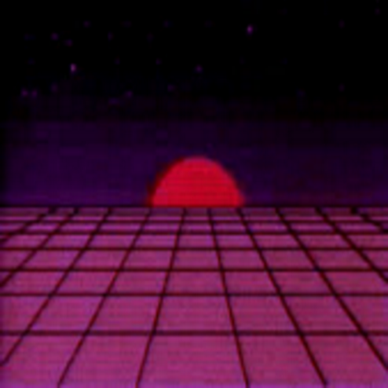
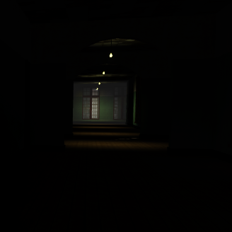
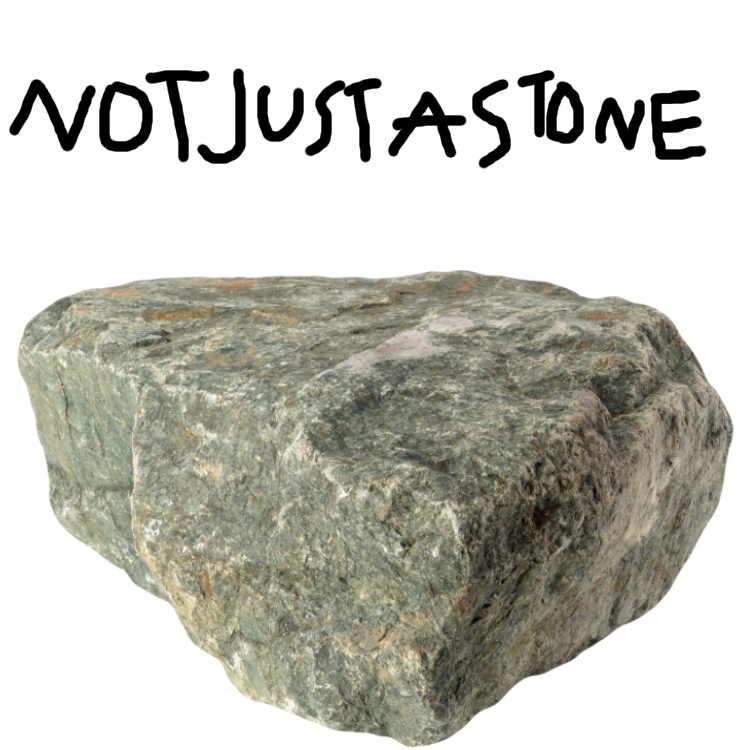
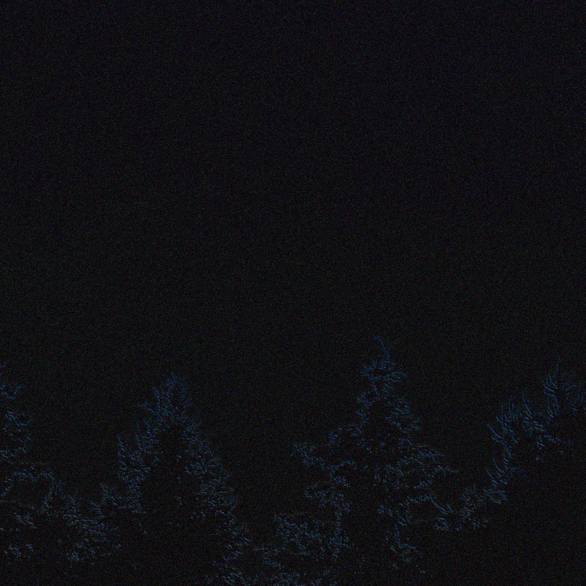
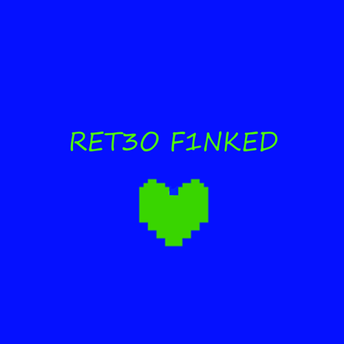
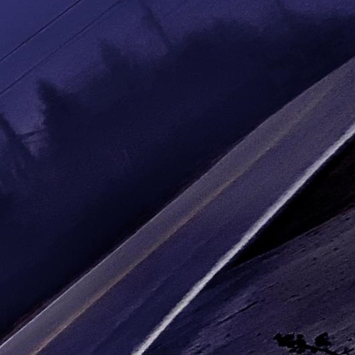
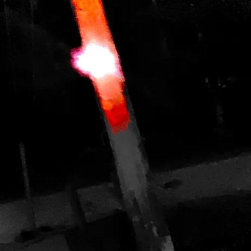
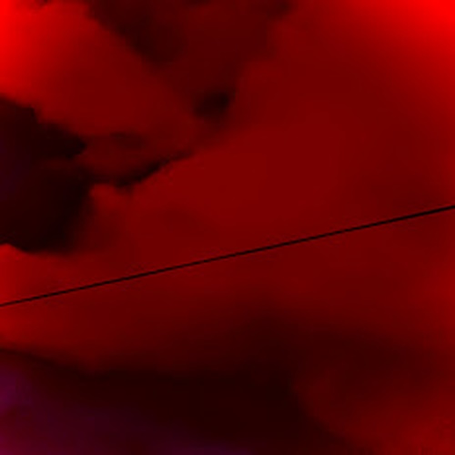
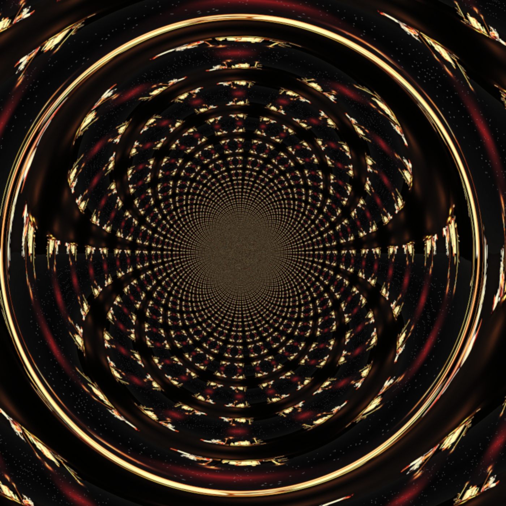
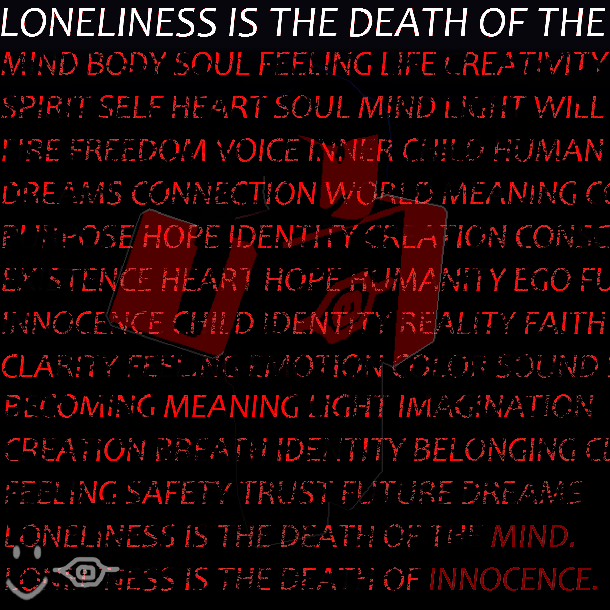

Album Archive (2022-2026)
Note: Any albums that have been cancelled will not appear here. It's too much work, sorry :(
Album downloads will come soon! The metadata will be edited as some of these have names I don't go by anymore.
This is a work in progress! More albums exist than just this, I just want to ship out a version that has SOME stuff on it.
Last update: March 4th, 2026
Aurisym (GEN 1)
Generation 1 = June 2022 - December 2022. By this point, I was going by a name that I don't go by anymore, so it's replaced with my main name, Aurisym, instead. This will go for all generations.
> BURNED TO THE SPIRIT

Burned to the Spirit is the first album by [Aurisym]. [Anonymous 1] forgot to put the "S" in the songs, but [Aurisym] rolled with that typo. It was uploaded to [Auri]'s channel the same day as TMDDTYA was, although they were completed on two seperate days. BTTS was allegedly finished on June 11th.
1. Paradical
2. Fleshless
3. Turn Back...
4. WHAT DID I SAY?
5. BIG GUY IS COMING
6. Hell's Scream's
7. Chamber of Sorrow
8. LOCKED IN THE HALL
9. The Battle Of Loss
10. The Journey Is Over...
> The Mansion Dracula Didn't Tell You About

Second album by [Aurisym], this is one of the first album to have a hard theme to follow. The idea is that it sounds like you're in a mansion alone, and it turns out you're not actually alone. This album originally used a green variant of the OVERDOSE album art before switching to a [RBLX game] screencap taken by [Anonymous 1]. While the start date says June 13th, the alt name comes from June 17th. The album art was changed near the end of development to the one we have, with an earlier rendition using a Green bottle being drank, similar to Overdose's cover.
1. Phone Bomber
2. The (Near) Death Of The Party
3. A Force You Should Avoid.
4. Depth's Of Hell
5. An Array Of Danger
6. Glitch In The System
7. Dim Lighting (By Anonymous Producer)
8. Visiting Dracula's Room...
9. The Mansion I Wasn't Told About
10. Where Did The Stakes Go?
11. Anxiety
12. They Know You're Here
13. WE NEED TO GET OUT OF HERE.
14. We Are Gone From That Place!
> The World Above
The third album released by [Aurisym]. At this time [Aurisym] decided to start making more detailed music, adding extra details in between sections. A demo version would be teased on October 14th, with the first three songs. The full album released on December 17th. The art further on in the album development was unfortunately generated by AI.
1. Welcome.... To The World Above!
2. Picked A Bad Door
3. The Butler
4. Intrusive Thoughts
5. The Family Mystery
6. DYSFUNCTIONAL WALLLESS TRANSPORTATION
7. Cougar's Arcade
8. Graveyard Blitz!
9. From The Other Side
10. Sudden.... Migration?
Aurisym (GEN 2)
Generation 2 = January 2023 - December 2023. All of Generation 2 is when music was getting better, but we still had some things to get under control.
> Not Just a Stone

NJAS serves as the fourth solo album produced by [Aurisym], which started in 2022 and ended up ending in 2023, being the first of two of [Auri's]'s projects to finish the year after they started, the second being Where Tyrants Fall. The album would be named by [Anonymous 1] after they was sent 4 demos and was offered to name them. NJAS is an entirely freestyle album with no solid theme, similar to early [Anonymous 1]'s works.
1. Store's Closing!
2. Dark Halls
3. Technical Difficulties
4. Past Midnight
5. Sent Overseas
6. Assembly
7. Greetings...
8. Holding Onto What's Left
9. Holding Onto What's Left (Anonymous 1 Remix)
10. The Blender...
> I Expected This To Happen
After two straight collaborations and several cancelled projects, [Aurisym] wants to do it right. With some optional (and very generous) help from [Anonymous 1]'s album art designer [Anonymous 2], and a lot of extra help on keeping development consistent, the album was wrapped up and completed on June 19th 2023, including some assistance from [Anonymous 1]. It was later published. IETTH was also the first project in [Auri]'s career to be proper loseless, being FLAC.
1. Armour Room
2. Party House
3. No Reason Not To
4. Due Respect
5. Growing Pains
6. Asset Playground
7. Retrospect
8. You're Late
9. Break Up
10. What Are You Talking About?
11. BACKWARDS HELL (Bonus Track)
12. Armour Room (Anonymous 1 Remix)
13. Party House (Anonymous 1 Remix)
14. What'd You Say? (Anonymous 1 Remix)
> HATE SURROUNDS ALL WE LOVE DOING (Expanded Edition)

[Aurisym]'s sixth album is a huge experimental work of many melodies and themes, such as anger, fatigue, polarization and rivalry. It originally started as a single created a late night when [Auri] and [Anon 1] accidently had a disagreement about whever or not the tracker was smelly garbage because of how empty it was. [Auri] misinterpreted it as an attack on their song and made the single "WHEN YOU START, PEOPLE HATE IT". Halfway through development, it was cleared up and [Anon 1] joined in to help produce the single, and later on, the rest of the album. The single was released on July 22nd 2023 and previewed to [Reborn]'s discord server, and was the only single made. Some time around August, a deluxe edition was pitched, which would release in September.
1. WHEN YOU TRY, THEY HATE IT
2. BUT WHEN YOU QUIT, THEY LOVE IT!
3. JOYLESS HOBBIES
4. ILLUMINATION FADES
5. ...REVEALING NOTHING.
6. THIS HELL OF A PLACE
7. SINNERS ARE NO BEGINNERS
8. DIRT MAKES TERRIBLE HOMES
9. THE DELUSIONIST
10. MANIFESTATION
11. AMBER
12. DETRANSITIONED
13. GRATITUDE (Interlude)
14. DOOMED
15. HELL MANIFESTS IN US ALL
16. THE SENDOFF (Bonus Track)
17. WORLDVIEW COLLAPSING (Bonus Track)
18. BLACK HOLE (Bonus Demo)
19. HELL OF A PLACE (OG)
20. VIBRANT GLOWS
Aurisym (GEN 2.5)
This serves for one purpose only, and that's to show a brief moment in time where Auri wasn't doing stuff in web DAWs; and instead in an iOS app, called "Launchpad". These would be technically "recorded live", as you have to press buttons instead of doing the melody yourself. They do the melodies, you just construct it.
> RET30 F1NKED

Retro Funked is the first single of the Launchpad era, using the template of "Retro Funk". The name is not original at all.
1. RET30 F1NKED
> Here we are Again...

Here we are Again is the second demo of the Launchpad era. It is unknown what it uses as a template, but it might be Retro Funk again.
1. Here we are Again...
> 2012: Doomsday

2012 is the third demo of the Launchpad era. This, of course, uses Retro Funk again. This used to be named 2010: Doomsday, but it was replaced to 2012 to fit the old conspiracy that the world would end around 2012.
1. 2012: Doomsday
> breaking the core

Breaking the Core is the fourth and technically fifth demo(s) of the Launchpad era. These two songs would use Drum & Bass. The original has vocals around 30 seconds in which is what the app gives you. This version of Breaking the Core would then get called internally as "Voxruin". A remake would be done a year later at the end of 2024, being called the 2025 remaster. This sounded like breakcore to me, which is why it's named "breaking the core".
1. breaking the core
2. breaking the core (2025 Remaster)
Aurisym (GEN 3)
January 2024 - December 2024
> Call of the Void

Being the first of it's kind since 2023, Call of the Void is the eighth solo album by [Aurisym] since HATE SURROUNDS ALL WE LOVE, and is considered the "last" [Aurisym] production. It would feature a lot of assistive production from [Anonymous 1] from as far back as Feburary, and is considered heavily co-produced by [Anon 1]. This version of the album is also directed by [Anonymous 1] production-wise, using a lot of mastering and assistive production [Anon 1] uses. This album is executively mixed by [Anon 1]. It released on August 18th 2024, and [Auri] went on a production break right after.
1. Gravemaster
Samples: Overworked by Anonymous 1
2. I.F.H.Y (feat. Anonymous 1)
Samples: Drifting Off by Anonymous 1
Notes: I.F.H.Y stands for "I Fucking Hate You".
3. Blasphemy
Samples: Drifting Off by Anonymous 1
4. The Cook
5. Hopeless Life
Samples: Gaster's Theme, Your Best Friend by Toby Fox
6. THX 4 NOTHING (feat. Anonymous 1)
Samples: Just Monika. by Dan Salvato | Some undertale song (unknown yet)
7. Repeating Trials
8. AMEN!
Notes: Kind of samples the breakcore drums? It's not too definitive.
9. Dishonesty's Outcome
10. Call Of The Void
11. Unchangable Weather (Early Version)
Notes: Early version of a song for a collab between Aurisym and Elapsed.
12. Hope Crushed (Early Version)
Earlier version of Hopeless Life, which is named Hope Crushed in this earlier version.
13. THX 4 NOTHING (Early Version)
Early version of THX 4 NOTHING. That's it.
14. A Slow Workload (Extended Remix)
Weirder version of A JOYLESS HOBBY, being extended 3 minutes, from 9:30 to 12:10
> loud mind think alike
loud minds think alike is a heart melatonin-like side project by [Duo]'s member [Auri], keeping inside the mind's low pitches but replacing it's no-structure ambience with sample based, accessible melodies. LMTA is considered a pre-cursor to the MDFIS sessions. This is the era that killed [Auri]'s break. The album was compiled, re-mixed and released December 30th 2024, and is considered a side project to MDFIS. [Anon 1] describes it as being like an exercise to get back into the game.
1. nervous breakdown
2. lowest point
3. thesis on hate
4. the end is near
Aurisym (GEN 4)
Serves from January 2025 to December 2025. Strap in, it's a lot!
> Call of the Void 2: VOID RABBIT

"Call of the Void 2: VOID RABBIT" is [Auri]'s ninth solo album, originally starting under the working title "Call of the Void 2", before being picked back up as "MY DEAR FRIEND, I'M SPIRALLING". The final name was chosen by exec. producer [Anon 1]. CV2:VR aims to organize and properly use CotV2's material and organize it into something grand, similar to [Anon Project 1]'s goal. Some of COTV2's songs would carry over to CV2:VR, however the rest would be given to [Anonymous 1] for [Anon Project 2]. CV2:VR has a mix of old CotV2 session songs as well as completely new productions that heavily use sampling.
1. U.S.T.G (UNSTRATEGIZED)
Samples: The Great Strategy by badliz
Finished: February 8th 2025
2. DESERTED
Samples: ??? by Anonymous 1
Finished: May 2nd 2025
3. FOLLOW THE LIGHT (feat. Anonymous 1)
Samples: Phosphor by Nightmargin
Finished: May 2nd 2025
4. WINTER CHILD
Samples: Game Over by (FNF Tricky V2 Producers)
Finished: February 12th 2025
5. I'M SPIRALLING
Interpolates: "let me fall" by LORDS.
Finished: March 22nd 2025
6. SO VERY WRONG
Interpolates: Synchronize by the Steven Universe Producers
Finished: February 16th 2025
7. THE VOID GOES DEEPER
Finished: March 22nd 2025
8. YELLOWSTONE (BAD MIC RADIO) (feat. R.C.O.S.)
Samples: Breaking the Habit by Linkin Park
Finished: March 22nd 2025
8. IN THE STARS
Samples: ??? by ???
Finished: May 2nd 2025
10. KARMAMANIAC!
Samples: ??? by Elapsed
Finished: March 2nd 2025
Notes: Was meant to be a diss on Elapsed. It would then become untrue as a diss and instead just a remix the following June of 2025, as I made up with Elapsed.
11. WEIGHT OF THE WORLD
Samples: Silverpoint by Nightmargin
Finished: May 2nd 2025
12. THE STOIC
Samples: Made of Steel by Battlejuice
Finished: April 29th 2025
13. READY 2 AIM
Samples: Guns Blazing by Undertale Yellow Team
Finished: May 2nd 2025
14. HYPERLUCK!
Samples: Focus by Chipzel
Finished: May 2nd 2025
15. GROUNDED FOR LIFE
Samples: Big Rock by Kevin Macleod
Finished: March 18th 2025, added to COTV2:VR tracklist May 1st 2025
16. IN VEIN
Samples: H20:HCL by Omori Sound Team
Finished: January 19th 2025
17. THE VOID GOES DEEPER (2024 Original Single Version)
18. BLUEBIRD OF MISFORTUNE (Anonymous 1 Demo)
Synthetic
> lost my world for a monster.
Auri's 12th solo album. Meant to be the last part of Jack & Pam, and also surrounding the idea of STXPM4VING being able to control Jack & Pam (more control over Jack) since the incident. This would then get turned into a more Heart Melatonin styled project, and then put under another name that isn't Aurisym, instead being "synthetic" to test it out.
1. drowning in the pessimism
Samples: "careless." by TheEpikGamers
Finished: January 5th, 2026
2. a world where nobody wins.
Finished: January 23rd, 2026
3. can i learn to love again?
Finished: January 31st, 2026
4. you've already lost me.
Samples: Rarity - lost to time / GRIEFING V3 by VirtualSignal
Finished: January 29th, 2026
5. your journey is far from over.
Samples: Journey from a Jar to the Sky by Mudeth
Finished: January 27th, 2026
6. december 18th
Finished: January 6th, 2026
Notes: This track was meant to say "December 28th" instead of 18th, but I got the dates mixed up. Too late now!
In dedication to *****.
7. may we all free all these chains
Finished: January 24th, 2026
8. you're such an empathy lacker.
Finished: January 29th, 2026
Samples: empathy lacker by Aurisym
Original Sample: PLEAD by Forsaken Sound Team
Notes: This was made, meant to kind of sour the originality of the circumstances of how the first song was made. These sour thoughts would be come untrue shortly after LMWFAM was released.
9. not everybody makes it out alive
Samples: goodbye by Sewerslvt
Finished: January 31st, 2026
10. rest now, little pyro.
Finished: January 31st, 2026
disc 2: bonuses
Things that were meant to go in LMWFAM, but didn't! Some of these are also just thrown in for fun.
1. the void king (Chase Concept)
Second idea for if one of my characters got into Die of Death. Unfinished.
2. it doesn't take effort to listen to me (Scrapped Idea)
Scrapped idea for LMWFAM, which samples "WHEN YOU START, THEY HATE IT" by Aurisym.
3. can i learn to love again? (OG Version)
OG Version of "can i learn to love again" before it got reworked.
4. so unworthy.
Scrapped idea for LMWFAM when it was going to be a more aggressive and emotional project.
5. rest now, little pyro. (OG Version)
OG Version of "rest now, little pyro". All of its sample gimmicks lead to the death of the OG.
> Loneliness is the death of the mind.

Soon.